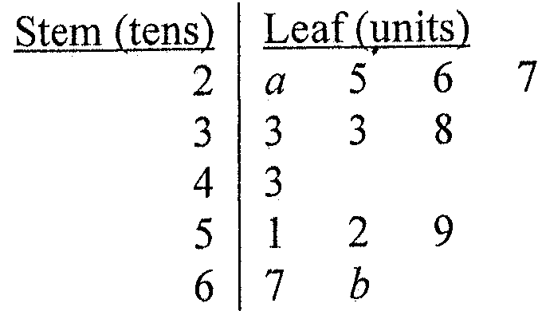

題目
委員會 A 各成員的年齡如下：
\[ 17,\ 18,\ 21,\ 21,\ 22,\ 22,\ 22,\ 23,\ 23,\ 23,\ 31,\ 31,\ 34,\ 35,\ 36,\ 47,\ 47,\ 58,\ 68,\ 69 \]
(a) 寫出委員會 A 成員年齡的中位數及眾數。
(b) 下面的莖葉圖顯示委員會 B 成員年齡的分布，已知該分布的範圍為 47。
(i) 求 $a$ 及 $b$。
(ii) 從每個委員會各隨機選出一名成員作為該委員會的代表。若兩名代表的年齡相差超過 40，他們便可參加比賽。求他們可參加比賽的概率。

委員會 B 年齡的莖葉圖（原卷附圖）
題解
第 1 步
(a) 20 個數據，中位數取第 10、11 個的平均
中位數（數據個數為偶數）
\(n\ \text{even}:\ \text{median}=\dfrac{x_{n/2}+x_{n/2+1}}{2}\)
委員會 A 有 $20$ 個數據，中位數是正中間兩個數據的平均值。
委員會 A 的年齡已由小至大排列，共 $20$ 個：
\[ 17,18,21,21,22,22,22,23,23,\underbrace{23}_{10}, \underbrace{31}_{11},31,34,35,36,47,47,58,68,69. \]
第 $10$ 個是 $23$，
第 $11$ 個是 $31$，所以
中位數
\[ =\frac{23+31}{2}=27. \]
眾數：$22$ 出現 $3$ 次，$23$ 亦出現 $3$ 次，
是出現次數最多的兩個，故眾數為 $22$ 及 $23$。
數數據時不要漏掉 $21$ 和 $47$ 各兩次；眾數可以有多於一個。
第 2 步
(b)(i) 用「範圍 $=47$」求 $a$ 與 $b$
全距（範圍）
\(R=x_{\max}-x_{\min}\)
莖葉圖中最小的數是 $20+a$、最大的是 $60+b$，用範圍便可列出一條方程。
莖 $2$ 的葉為 $a,5,6,7$，故最小年齡為 $20+a$（$0\le a\le5$）；
莖 $6$ 的葉為 $7,b$，故最大年齡為 $60+b$（$7\le b\le9$）。
由範圍為 $47$：
\[ (60+b)-(20+a)=47\;\Longrightarrow\;b-a=7. \]
因為 $b$ 是一位數字（$b\le9$）、$a\ge0$，
逐一檢查得
\[ (a,b)=(0,7),\ (1,8),\ (2,9). \]
$a=3$ 時 $b=10$ 不是一位數字，所以只有三組解。
第 3 步
(b)(ii) 數出有利的配對，再求概率
概率的定義
\(P(E)=\dfrac{\text{number of favourable outcomes}}{\text{total number of outcomes}}\)
兩名代表是各自獨立、等可能地選出，故可用「有利配對數 ÷ 總配對數」。
委員會 B 共 $13$ 人，年齡為 $20+a$、$25$、$26$、$27$、$33$、$33$、$38$、$43$、$51$、$52$、$59$、$67$、$60+b$；
委員會 A 共 $20$ 人，總配對數 $=20\times13=260$。
年齡相差超過 $40$，必須「一老一少」，逐組數：
(1) A 的大齡 $68,69$（$2$ 人）配 B 的小齡 $20+a,25,26,27$（$4$ 人）：$68-27=41>40$，
共 $2\times4=8$ 對。
(2) B 的大齡 $67$ 與 $60+b$（$2$ 人）配 A 的小齡 $17,18,21,21,22,22,22,23,23,23$（$10$ 人）：$67-26=41>40$，
共 $2\times10=20$ 對。
(3) B 的 $59$ 配 A 的 $17$ 及 $18$：$59-18=41>40$，
共 $2$ 對。
其餘組合（例如 A 的 $21$ 至 $58$ 配 B 的 $20$ 至 $59$）相差都不超過 $40$。
（$a$、$b$ 的取值不影響計數：$20+a\le22$，而 $60+b\ge67$。
）
有利配對共 $8+20+2=30$，故
\[ P=\frac{30}{260}=\frac{3}{26}. \]
$67-27=40$ 只是「等於」$40$，不合「超過 $40$」，所以 A 要不大於 $26$ 才能配 B 的 $67$。
答案(a) 中位數 $=27$，眾數 $=22$ 及 $23$
(b)(i) $(a,b)=(0,7)$、$(1,8)$ 或 $(2,9)$
(b)(ii) $\dfrac{3}{26}$（$\dfrac{30}{260}$）